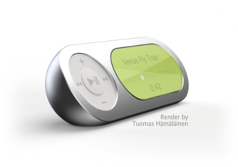
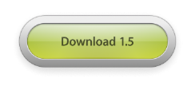
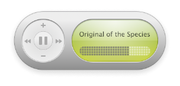
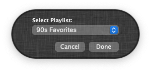
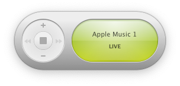
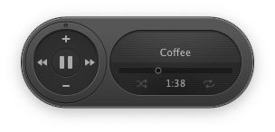

A mini player remote for Apple Music.
A take on the classic iTunes widget.





"You can once again enjoy your music in retro OS X style."
The Verge
Read the article
"Music Widget brings back the 2005 iTunes nostalgia we didn't know we needed."
iMore
Read the article
"Remember the iTunes Mini Player? Thanks to engineer Mario Guzman, it’s back."
The Awesomer
Read the article
"Mario Guzman recreates the old iTunes Dashboard widget for modern day Apple Music control."
Uncrate
Read the article
"You can party like it’s 2005 with your tunes."
Cult of Mac
Read the article
| Software | macOS Monterey and newer; Music.app |
|---|---|
| Hardware | Universal Binary for Macintosh computers with Apple Silicon and Intel processors |
| Language | English, Spanish, Italian, Finnish, German, and Polish |
| Code | 100% Native. Written in Swift & Objective-C using AppKit. |
THE SOFTWARE IS PROVIDED "AS IS", WITHOUT WARRANTY OF ANY KIND, EXPRESS OR IMPLIED, INCLUDING BUT NOT LIMITED TO THE WARRANTIES OF MERCHANTABILITY, FITNESS FOR A PARTICULAR PURPOSE AND NONINFRINGEMENT. IN NO EVENT SHALL THE AUTHORS OR COPYRIGHT HOLDERS BE LIABLE FOR ANY CLAIM, DAMAGES OR OTHER LIABILITY, WHETHER IN AN ACTION OF CONTRACT, TORT OR OTHERWISE, ARISING FROM, OUT OF OR IN CONNECTION WITH THE SOFTWARE OR THE USE OR OTHER DEALINGS IN THE SOFTWARE.
Apple Music and iTunes are registered trademarks of Apple Inc.